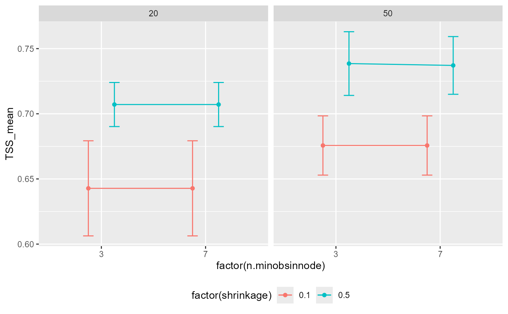

Fit and validate Generalized Boosted Regression models with exploration of hyper-parameters that optimize performance
Source:R/tune_gbm.R
tune_gbm.RdThis function fits and validates Generalized Boosted Regression models (GBM) while exploring different hyper-parameter combinations to find the one that optimizes model performance. It is a tune version of [fit_gbm()].
Usage
tune_gbm(
data,
response,
predictors,
predictors_f = NULL,
fit_formula = NULL,
partition,
grid = NULL,
thr = NULL,
metric = "TSS",
n_cores = 1
)Arguments
- data
data.frame. Database with response (0,1) and predictors values.
- response
character. Column name with species absence-presence data (0,1).
- predictors
character. Vector with the column names of quantitative predictor variables (i.e. continuous variables). Usage predictors = c("aet", "cwd", "tmin")
- predictors_f
character. Vector with the column names of qualitative predictor variables (i.e. ordinal or nominal variables type). Usage predictors_f = c("landform")
- fit_formula
formula. A formula object with response and predictor variables (e.g. formula(pr_ab ~ aet + ppt_jja + pH + awc + depth + landform)). Note that the variables used here must be consistent with those used in response, predictors, and predictors_f arguments. Default is NULL.
- partition
character. Column name with training and validation partition groups.
- grid
data.frame. A data frame object with algorithm hyper-parameter values to be tested. It Is recommended to generate this data.frame with the grid() function. Hyper-parameters needed for tuning are 'n.trees', 'shrinkage', and 'n.minobsinnode'.
- thr
character. Threshold used to get binary suitability values (i.e. 0,1) needed for threshold-dependent performance metrics. It is possible to use more than one threshold type. Provide a vector for this argument. The following threshold types are available:
lpt: The highest threshold at which there is no omission.
equal_sens_spec: Threshold at which the sensitivity and specificity are equal.
max_sens_spec: Threshold at which the sum of the sensitivity and specificity is the highest (aka threshold that maximizes the TSS).
max_jaccard: The threshold at which the Jaccard index is the highest.
max_sorensen: The threshold at which the Sorensen index is highest.
max_fpb: The threshold at which FPB (F-measure on presence-background data) is highest.
sensitivity: Threshold based on a specified sensitivity value. Usage thr = c('sensitivity', sens='0.6') or thr = c('sensitivity'). 'sens' refers to sensitivity value. If no sensitivity value is specified, the default used is 0.9
If more than one threshold type is used they must be concatenate, e.g., thr=c('lpt', 'max_sens_spec', 'max_jaccard'), or thr=c('lpt', 'max_sens_spec', 'sensitivity', sens='0.8'), or thr=c('lpt', 'max_sens_spec', 'sensitivity'). Function will use all threshold types if no threshold is specified.
- metric
character. Performance metric used for selecting the best combination of hyper-parameter values. The following metrics can be used: SORENSEN, JACCARD, FPB, TSS, KAPPA, AUC, and BOYCE. TSS is used as the default.
- n_cores
numeric. Number of cores use for parallelization. Default 1
Value
A list object with:
model: A "gbm" class object from gbm package. This object can be used for predicting.
predictors: A tibble with quantitative (c column names) and qualitative (f column names) variables use for modeling.
performance: Hyper-parameter values and performance metric (see
sdm_eval) for the best hyper-parameter combination.performance_part: Performance metric for each replica and partition (see
sdm_eval).hyper_performance: Performance metric (see
sdm_eval) for each combination of the hyper-parameters.data_ens: Predicted suitability for each test partition based on the best model. This database is used in
fit_ensemble
Examples
# \donttest{
data(abies)
abies
#> # A tibble: 1,400 × 13
#> id pr_ab x y aet cwd tmin ppt_djf ppt_jja pH awc
#> <int> <dbl> <dbl> <dbl> <dbl> <dbl> <dbl> <dbl> <dbl> <dbl> <dbl>
#> 1 715 0 -95417. 314240. 323. 546. 1.24 62.7 17.8 5.77 0.108
#> 2 5680 0 98987. -159415. 448. 815. 9.43 130. 6.43 5.60 0.160
#> 3 7907 0 121474. -99463. 182. 271. -4.95 151. 11.2 0 0
#> 4 1850 0 -39976. -17456. 372. 946. 8.78 116. 2.70 6.41 0.0972
#> 5 1702 0 111372. -91404. 209. 399. -4.03 165. 9.27 0 0
#> 6 10036 0 -255715. 392229. 308. 535. 4.66 166. 16.5 5.70 0.0777
#> 7 12384 0 -311765. 380213. 568. 352. 4.38 480. 41.2 5.80 0.110
#> 8 6513 0 111360. -120229. 327. 633. 4.93 163. 8.91 1.18 0.0116
#> 9 9884 0 -284326. 442136. 377. 446. 3.99 296. 16.8 5.96 0.0900
#> 10 8651 0 137640. -110538. 215. 265. -4.62 180. 9.57 0 0
#> # ℹ 1,390 more rows
#> # ℹ 2 more variables: depth <dbl>, landform <fct>
# Partition the data with the k-fold method
abies2 <- part_random(
data = abies,
pr_ab = "pr_ab",
method = c(method = "kfold", folds = 5)
)
# pr_ab is the name of the column with species presence and absences (i.e. the response variable)
# from aet to landform are the predictors variables (landform is a qualitative variable)
# Hyper-parameter values for tuning
tune_grid <-
expand.grid(
n.trees = c(20, 50, 100),
shrinkage = c(0.1, 0.5, 1),
n.minobsinnode = c(1, 3, 5, 7, 9)
)
gbm_t <-
tune_gbm(
data = abies2,
response = "pr_ab",
predictors = c(
"aet", "cwd", "tmin", "ppt_djf", "ppt_jja",
"ppt_jja", "pH", "awc", "depth"
),
predictors_f = c("landform"),
partition = ".part",
grid = tune_grid,
thr = "max_sens_spec",
metric = "TSS",
n_cores = 1
)
#> Formula used for model fitting:
#> pr_ab ~ aet + cwd + tmin + ppt_djf + ppt_jja + ppt_jja + pH + awc + depth + landform
#> Tuning model...
#> Replica number: 1/1
#> Fitting final model with best hyper-parameters...
#> Formula used for model fitting:
#> pr_ab ~ aet + cwd + tmin + ppt_djf + ppt_jja + ppt_jja + pH + awc + depth + landform
#> Replica number: 1/1
#> Partition number: 1/5
#> Partition number: 2/5
#> Partition number: 3/5
#> Partition number: 4/5
#> Partition number: 5/5
# Outputs
gbm_t$model
#> gbm::gbm(formula = formula1, distribution = "bernoulli", data = data,
#> n.trees = n_trees, n.minobsinnode = n_minobsinnode, shrinkage = shrinkage)
#> A gradient boosted model with bernoulli loss function.
#> 100 iterations were performed.
#> There were 9 predictors of which 9 had non-zero influence.
gbm_t$predictors
#> # A tibble: 1 × 10
#> c1 c2 c3 c4 c5 c6 c7 c8 c9 f
#> <chr> <chr> <chr> <chr> <chr> <chr> <chr> <chr> <chr> <chr>
#> 1 aet cwd tmin ppt_djf ppt_jja ppt_jja pH awc depth landform
gbm_t$performance
#> # A tibble: 1 × 36
#> n.trees shrinkage n.minobsinnode model threshold thr_value n_presences
#> <dbl> <dbl> <dbl> <chr> <chr> <dbl> <int>
#> 1 100 0.5 7 gbm max_sens_spec 0.546 700
#> # ℹ 29 more variables: n_absences <int>, TPR_mean <dbl>, TPR_sd <dbl>,
#> # TNR_mean <dbl>, TNR_sd <dbl>, W_TPR_TNR_mean <dbl>, W_TPR_TNR_sd <dbl>,
#> # SORENSEN_mean <dbl>, SORENSEN_sd <dbl>, JACCARD_mean <dbl>,
#> # JACCARD_sd <dbl>, FPB_mean <dbl>, FPB_sd <dbl>, OR_mean <dbl>, OR_sd <dbl>,
#> # TSS_mean <dbl>, TSS_sd <dbl>, KAPPA_mean <dbl>, KAPPA_sd <dbl>,
#> # MCC_mean <dbl>, MCC_sd <dbl>, AUC_mean <dbl>, AUC_sd <dbl>,
#> # BOYCE_mean <dbl>, BOYCE_sd <dbl>, CRPS_mean <dbl>, CRPS_sd <dbl>, …
gbm_t$performance_part
#> # A tibble: 5 × 21
#> replica partition model threshold thr_value n_presences n_absences TPR TNR
#> <chr> <chr> <chr> <chr> <dbl> <int> <int> <dbl> <dbl>
#> 1 1 1 gbm max_sens… 0.550 140 140 0.864 0.914
#> 2 1 2 gbm max_sens… 0.622 140 140 0.836 0.857
#> 3 1 3 gbm max_sens… 0.430 140 140 0.921 0.871
#> 4 1 4 gbm max_sens… 0.511 140 140 0.929 0.836
#> 5 1 5 gbm max_sens… 0.348 140 140 0.936 0.771
#> # ℹ 12 more variables: W_TPR_TNR <dbl>, SORENSEN <dbl>, JACCARD <dbl>,
#> # FPB <dbl>, OR <dbl>, TSS <dbl>, KAPPA <dbl>, MCC <dbl>, AUC <dbl>,
#> # BOYCE <dbl>, CRPS <dbl>, IMAE <dbl>
gbm_t$hyper_performance
#> # A tibble: 45 × 33
#> n.trees shrinkage n.minobsinnode model threshold TPR_mean TPR_sd TNR_mean
#> <dbl> <dbl> <dbl> <chr> <chr> <dbl> <dbl> <dbl>
#> 1 20 0.1 1 gbm max_sens_spec 0.897 0.0322 0.753
#> 2 20 0.1 3 gbm max_sens_spec 0.897 0.0322 0.753
#> 3 20 0.1 5 gbm max_sens_spec 0.897 0.0322 0.753
#> 4 20 0.1 7 gbm max_sens_spec 0.897 0.0322 0.753
#> 5 20 0.1 9 gbm max_sens_spec 0.897 0.0322 0.753
#> 6 20 0.5 1 gbm max_sens_spec 0.87 0.0663 0.831
#> 7 20 0.5 3 gbm max_sens_spec 0.87 0.0663 0.831
#> 8 20 0.5 5 gbm max_sens_spec 0.87 0.0663 0.831
#> 9 20 0.5 7 gbm max_sens_spec 0.87 0.0663 0.831
#> 10 20 0.5 9 gbm max_sens_spec 0.87 0.0663 0.831
#> # ℹ 35 more rows
#> # ℹ 25 more variables: TNR_sd <dbl>, W_TPR_TNR_mean <dbl>, W_TPR_TNR_sd <dbl>,
#> # SORENSEN_mean <dbl>, SORENSEN_sd <dbl>, JACCARD_mean <dbl>,
#> # JACCARD_sd <dbl>, FPB_mean <dbl>, FPB_sd <dbl>, OR_mean <dbl>, OR_sd <dbl>,
#> # TSS_mean <dbl>, TSS_sd <dbl>, KAPPA_mean <dbl>, KAPPA_sd <dbl>,
#> # MCC_mean <dbl>, MCC_sd <dbl>, AUC_mean <dbl>, AUC_sd <dbl>,
#> # BOYCE_mean <dbl>, BOYCE_sd <dbl>, CRPS_mean <dbl>, CRPS_sd <dbl>, …
gbm_t$data_ens
#> # A tibble: 1,400 × 5
#> rnames replicates part pr_ab pred
#> <chr> <chr> <chr> <dbl> <dbl>
#> 1 3 .part 1 0 0.0125
#> 2 4 .part 1 0 0.00280
#> 3 5 .part 1 0 0.165
#> 4 8 .part 1 0 0.00266
#> 5 10 .part 1 0 0.0929
#> 6 12 .part 1 0 0.720
#> 7 14 .part 1 0 0.0166
#> 8 18 .part 1 0 0.00898
#> 9 19 .part 1 0 0.0177
#> 10 25 .part 1 0 0.219
#> # ℹ 1,390 more rows
# Graphical exploration of performance of each hyper-parameter setting
require(ggplot2)
pg <- position_dodge(width = 0.5)
ggplot(gbm_t$hyper_performance, aes(factor(n.minobsinnode),
TSS_mean,
col = factor(shrinkage)
)) +
geom_errorbar(aes(ymin = TSS_mean - TSS_sd, ymax = TSS_mean + TSS_sd),
width = 0.2, position = pg
) +
geom_point(position = pg) +
geom_line(
data = gbm_t$tune_performance,
aes(as.numeric(factor(n.minobsinnode)),
TSS_mean,
col = factor(shrinkage)
), position = pg
) +
facet_wrap(. ~ n.trees) +
theme(legend.position = "bottom")

# }